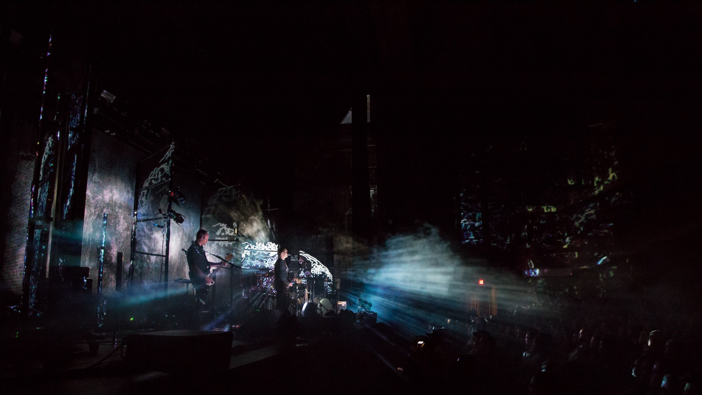

Sigur Rós
About
Sigur Rós is an Icelandic post-rock band from Reykjavík, who have been active since 1994. Known for their ethereal sound, frontman Jónsi's falsetto vocals, and the use of bowed guitar, the band's music is also noticeable for its incorporation of classical and minimalist aesthetic elements.

